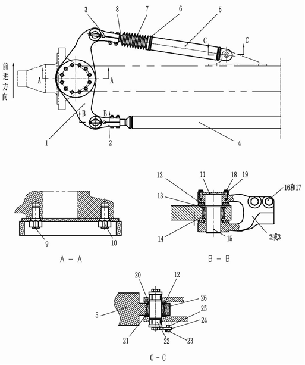

转向缸总成. · STEERING CYLINDER ASSY
Гидроцилиндр поворота
Описание и расположение
Номера позиций в скобках совпадают с номерами позиций на рис. 2.
Гидроцилиндр поворота (5) представляет собой гидроцилиндр двойного действия, устанавливается на переднем мосту. Конец гильзы гидроцилиндра поворота (5) гидроцилиндра соединяется с балкой переднего моста через шарнирный подшипник (26); конце штока соединяется с поворотным кулаком через шарнирный подшипник (14) и головку вилки (3) рулевого сошка (1).
Управление
Масло под давлением из усилителя потока проходит через отверстие в конце гильзы гидроцилиндра или отверстие в конце штока и поступает в гидроцилиндр поворота; гидравлическое масло через отверстие в другом конце возвращается в усилитель потока, шток гидроцилиндра выдвигается или втягивается под действием перепада давления на обоих концах поршня. Данное движение заставляет рулевую сошку перемещаться.
Более подробная информация о системе рулевого управления приведена в части 050-0090 - «Описание системы рулевого управления».
Более подробная информация о механизме рулевого управления приведена в части 070-0030 - «Механизм рулевого управления».
Техническое обслуживание и регулировка
Номера позиций в скобках совпадают с номерами позиций на рис. 2.
1. Очистить два гидроцилиндра поворота (5), поперечную тягу (4) и гидравлические шланги. Проверить наличие/отсутствие износа, утечек и повреждений. В случае обнаружения неисправностей, следует отремонтировать или заменить в соответствии с установленными требованиями.
ПРЕДУПРЕЖДЕНИЕ
Поскольку регулировка должна производиться при работающем двигателе карьерного самосвала, в связи с этим, перед началом ремонта следует использовать подходящее устройство для удержания автомобиля в неподвижном состоянии, остановить карьерный самосвал в безопасном месте. Запрещается находиться в опасной зоне вокруг движущихся частей.2. Проверить правильность установки, рабочее состояние и состояние смазки компонентов, сопряженных с гидроцилиндром поворота (5). В случае обнаружения неисправностей, следует отремонтировать или заменить в соответствии с установленными требованиями.
3. Проверить пальцы (15 и 22) на наличие износа и повреждений.
4. Удаление воздуха из системы рулевого управления производится в следующем порядке:
a. Запустить двигатель и повышать давление в системе энергоаккумулятора до требуемой нормы.
b. Поворачивать рулевое колесо из крайне правого положения в крайне левое положение и наоборот до момента исчезновения воздуха из системы рулевого управления.
c. Выключить двигатель.
Снятие
Номера позиций в скобках совпадают с номерами позиций на рис. 2.
ПРЕДУПРЕЖДЕНИЕ
Убедиться в надлежащей надежности упорных клиньев для предотвращения перемещения автомобиля и достаточной грузоподъемности подъемного оборудования, надежном креплении и высокой безопасности во избежание телесных повреждений и материального ущерба.
ПРЕДУПРЕЖДЕНИЕ
При подъеме больших, тяжелых деталей или автомобиля необходимо обеспечить безопасность и надежность подъемного оборудования, в противном случае это может привести к телесным повреждениям и материальному ущербу.Снятие гидроцилиндра поворота производится в следующем порядке:
1. Остановить автомобиль на ровном участке, включить стояночный тормоз, выключить двигатель и главный выключатель источника питания.
2. Сбросить давление в системе рулевого управления в соответствии с порядком, указанным в части 050-0090 - «Описание гидравлической системы».
ПРИМЕЧАНИЕ: Следует проверить и убедиться в надлежащем сбросе давления в системе рулевого управления с использованием ручного дренажного клапана в блоке клапанов управления поворотом.
3. Снять гидравлические шланги. Приклеить наклейку для обеспечения правильной повторной установки на каждый шланг. Установить чистые пробки на все открытые концы.
4. Снять трубопроводы централизованной смазки.
5. Подпирать гидроцилиндр поворота подходящим методом для предотвращения его перемещения и облегчения снятия.
6. Снимите болт (18) и шайбу (19) с головки вилки (3) и сошки рулевого управления (1); снимите нажимную пластину (11), палец (15) и сальник (12);
ПРИМЕЧАНИЕ: Перед снятием пальца (15) следует зафиксировать гидроцилиндр поворота (5), затем снять палец (15).
7. Отсоедините гидроцилиндр поворота (5) от балки переднего моста.
a. Снимите болт (25), прокладку (24) и нажимную пластину (23).
b. Снимите штифт в сборе (22) и сальник (12). При снятии штифта в сборе (22) следует отдельно снять с обоих концов болт (поз. 1, рис. 3), шайбу (поз. 2, рис. 3) и втулку (поз. 3, рис. 3); наконец, снять штифт (поз. 4, рис. 3).
Спецификация
1
Рулевая сошка
8
Зажим
15
Штифт
22
Узел штифта
2
Вилка (по левому направлению повернуть)
9
Болт
16
Болт
23
Прижимная пластина
3
Вилка (по правому направлению повернуть)
10
Коническая гайка
17
Гайка
24
Прокладка
4
Поперечный рычаг тяги
11
Прижимная пластина
18
Болт
25
Болт
5
Гидроцилиндр поворота
12
Уплотнение
19
Шайба
26
Шаровой подшипник
6
Зажим
13
Упорное кольцо
20
Втулка
7
Пылезащитная втулка
14
Шаровой подшипник
21
Упорное кольцо
Рис. 2. Механизм рулевого управления в сборе
ПРИМЕЧАНИЕ: Перед снятием пальца в сборе (22) следует зафиксировать гидроцилиндр поворота (5), затем снять палец в сборе (22).
8. Снять гидроцилиндр поворота (5), разместить его в чистом участки для облегчения разборки.
9. Повторять шаги от 5 до 8 по мере необходимости, чтобы снять другой гидроцилиндр поворота (5).
Разборка
Цифры в круглых скобках показаны на рисунке 1.
Разборка гидроцилиндра поворота производится в следующем порядке:
1. Зафиксировать гидроцилиндр поворота (поз. 5 на рис. 2).
2. Проверьте наличие/отсутствие повреждений или коробления шарикоподшипника (26, рис. 2), втулки (20, рис. 2) и стопорного кольца (21, рис. 2), установленных на цилиндровой гильзе в сборе (18). В случае обнаружения любых дефектов, следует снять и заменить.
3. Снять болт (поз. 16 на рис. 2), гайку (поз. 17 на рис. 2), ослабить усилие затяжки головки вилки (поз. 3 на рис. 2).
4. Держать шток (9) подходящим ключом в зафиксированном состоянии, медленно вывинтить головку вилки (поз. 3 на рис. 2) из штока (9).
5. Снимите прижимной болт (17)
6. Снимите направляющую втулку (6) с цилиндровой гильзы в сборе (18).
7. Снимите пылезащитное кольцо (1), уплотнительные кольца (3, 4, 8), стопорные кольца (2, 7) и антифрикционное кольцо (5) с направляющей втулки (6), и их утилизируйте.
8. Медленно снять поршень (11) и шток (9) в сборе из гильзы гидроцилиндра в сборе (18).
9. Снять износоустойчивое кольцо (12) и уплотнительное кольцо (13) из поршня (11), заменить их новыми.
10. Снимите прижимные болты (15, 17), контргайку (14), бронзовую заглушку (16), и утилизируйте бронзовую заглушку (16).
11. Снимите со штока (9) поршень (11).
12. Снимите с поршня (11) О-образное кольцо (10).
Спецификация
1
Болт
3
Муфта
2
Шайба
4
Палец
Рис. 3. Палец в сбореПроверка
Осмотр гидроцилиндра поворота производится в следующем порядке:
1. Очистить все металлические компоненты в растворителе и высушить сжатым воздухом.
2. Проверить ряд компонентов на наличие серьезного износа, царапин и надиров. Отремонтировать или заменить в соответствии с установленными требованиями.
3. Проверьте наличие/отсутствие повреждений или коробления шарикоподшипника (14, рис. 2) и стопорного кольца (13, рис. 2), установленных на сошке рулевого управления. В случае обнаружения любых дефектов, следует снять и заменить.
Сборка
Общая сборка гидроцилиндра поворота производится в следующем порядке:
ПРЕДУПРЕЖДЕНИЕ
При подъеме больших, тяжелых деталей или автомобиля необходимо обеспечить безопасность и надежность подъемного оборудования, в противном случае это может привести к телесным повреждениям и материальному ущербу.Цифры в круглых скобках показаны на рисунке 1.
ПРИМЕЧАНИЕ: Нанести слой гидравлического масла на посадочные поверхности, сопрягаемые поверхности всех деталей для облегчения установки. Выполнить операции на чистом участке во избежание попадания пыли или примесей в масло.
1. Установите О-образное кольцо (10) на поршень (11).
2. Нанесите клей Loctite #271 на поршень (11), медленно прикрутите к штоку (9), избегайте повреждения О-образного кольца (10). Номинальный момент затяжки составляет 1470-1770 фут-фунтов (1995-2400 Н.м).
3. После установки бронзовой заглушки (16) на поршень (11), установите прижимной болт (15) и нанесите клей Loctite #242, номинальный момент затяжки составляет 21-25 фут-фунтов (28-34 Н.м). Установите контргайку (14) и нанесите клей Loctite #271, номинальный момент затяжки составляет 700-1000 фут-фунтов (950-1355 Н.м). Установите прижимной болт (17) на контргайку и нанесите клей Loctite #242, номинальный момент затяжки составляет 8-12 фут-фунтов (11-16 Н.м).
4. Установить износоустойчивое кольцо (поз. 12 на рис. 4), уплотнительное кольцо (поз. 13 на рис. 4) на поршень (11).
5. Медленно установить поршень (11) и шток (9) в сборе на гильзу гидроцилиндра в сборе (18).
6. Установите пылезащитное кольцо (поз. 1, рис. 5), уплотнительные кольца (поз. 3, 4, 8, рис. 5), стопорные кольца (2, 7, рис. 5) и антифрикционное кольцо (5) на направляющую втулку (6).
7. Прикрутите направляющую втулку (6) к цилиндровой гильзе в сборе(18), избегайте повреждения уплотнительного элемента направляющей втулки (6).
8. Установите прижимной болт (17) и нанесите клей Loctite #242, номинальный момент затяжки составляет 8-12 фут-фунтов (11-16 Н.м).
9. Держать шток (9) подходящим ключом в зафиксированном состоянии, медленно навинтить головку вилки (поз. 3 на рис. 2) на шток (9).
10. Установить болт (поз. 16 на рис. 2), гайку (поз. 17 на рис. 2), убедиться в надлежащем усилии затяжки головки вилки (поз. 3 на рис. 2).
11. Если были сняты шарикоподшипник (26, рис. 2), втулку (20, рис. 2) и стопорное кольцо (21, рис. 2), по очереди установите эти компоненты на цилиндровую гильзу в сборе (18).
Спецификация
12
Износоустойчивое кольцо
13
уплотнительное кольцо
Рис. 4. Вид поршня в разрезе
Спецификация
1
Пылезащитное кольцо
5
Износоустойчивое кольцо
2
Стопорное кольцо
7
Стопорное кольцо
3
уплотнительное кольцо
8
уплотнительное кольцо
4
уплотнительное кольцо
Рис. 5. Вид направляющей втулки в разрезе
Установка
Номера позиций в скобках совпадают с номерами позиций на рис. 2.
ПРЕДУПРЕЖДЕНИЕ
При подъеме больших, тяжелых деталей или автомобиля необходимо обеспечить безопасность и надежность подъемного оборудования, в противном случае это может привести к телесным повреждениям и материальному ущербу.Установка гидроцилиндра поворота производится в следующем порядке:
1. Подпирать гидроцилиндр поворота подходящим методом.
2. Если были сняты шарикоподшипник (14) и стопорное кольцо (13), используемые для крепления сошки рулевого управления, по очереди установите эти компоненты.
3. Установите головку вилки (3) на сошку рулевого управления (1). Сначала установите палец (15) и сальник (12), и закрепите болтом (18), закаленной шайбой (19) и нажимной пластиной (11).
4. Присоедините гидроцилиндр поворота (5) к балке переднего моста.
a. Переместите гидроцилиндр поворота (5) на балке переднего моста, и установите штифт (4, рис. 3), болт (1, рис. 3), шайбу (2, рис. 3) и втулку (3, рис. 3), сальник (12).
b. Установите болт (25), прокладку (24) и нажимную пластину (23), закрепите штифт в сборе(22).
5. Повторять шаги от 2 до 4 по мере необходимости, установить другой гидроцилиндр поворота (5).
6. Установить все гидравлический трубопроводы и трубопроводы централизованной смазки.
7. Перед приведением в действие следует удалить воздух из гидравлической системы в соответствии с требованиями, указанными в разделе «Ремонт и регулировка».
8. Проверить гидравлическую систему на наличие утечек.
9. Проверить схождение передних колес в соответствии с порядком регулировки, указанным в части 070-0030 - «Механизм рулевого управления».
Гидравлическая система– блок клапанов управления поворотом
050-0150
Гидравлическая система– гидроцилиндр поворота
050-0140
6
5
Гидравлическая система– гидроцилиндр поворота
050-0140
4
Гидравлическая система– гидроцилиндр поворота
050-0140
5
Гидравлическая система– гидроцилиндр поворота
050-0140
Гидравлическая система– гидроцилиндр поворота
050-0140
14 12 13 12 11 10 9 8 7 6 5 5 4 3 2 1
18
17
16
15
17
Спецификация1Пылезащитное кольцо7Стопорное кольцо13уплотнительное кольцо2Стопорное кольцо8уплотнительное кольцо14Стопорная гайка3уплотнительное кольцо9Шток15Прижимной болт4уплотнительное кольцо10О-образное кольцо16Бронзовая заглушка5Износоустойчивое кольцо11Поршень17Прижимной болт6Направляющая втулка12Износоустойчивое кольцо18Гильза гидроцилиндра в сбореРис. 1. Гидроцилиндр поворота в разобранном виде
16 и 17
2 или 3
По ходу движения
Иллюстрации
